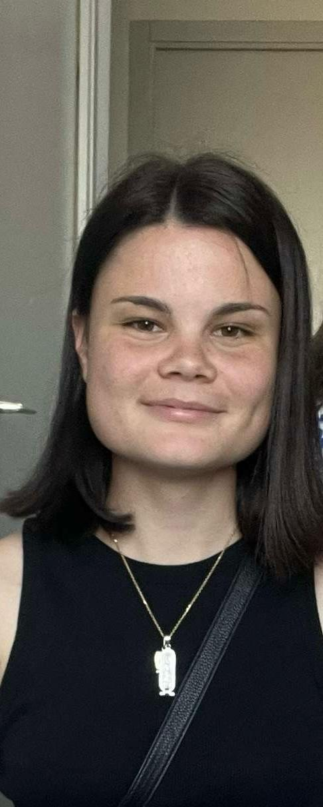

Diplômée d'un Master de Géosciences, Géophysique du Littoral, je m'intéresse à la dynamique des environnements marins et côtiers. Je développer des approches combinant modélisation numérique, télédétection, analyse de données et écologie pour étudier l'évolution des milieux littoraux.
Mon parcours s'est construit autour d'un intérêt pour les environnements naturels et plus particulièrement pour les milieux marins et littoraux. Après une Licence Sciences de la Vie, de la Terre et de l'Univers, parcours Biologie-Géologie à l'Université de Bretagne Occidentale, j'ai intégré le Master Sciences pour l'Environnement, parcours Géosciences, Géophysique du Littoral à La Rochelle Université.
Ma formation m'a permis de développer une approche pluridisciplinaire des problématiques littorales, en associant géosciences, observation de l'environnement, modélisation numérique et analyse de données. Mes stages m'ont notamment amenée à travailler sur le suivi de l'évolution du trait de côte par télédétection et sur la modélisation hydrodynamique des habitats intertidaux.
Aujourd'hui à la recherche d'une première expérience professionnelle, je souhaite poursuivre mon parcours dans le domaine des géosciences marines et littorales. Je suis particulièrement intéressée par les projets faisant appel à la modélisation numérique, à l'analyse de données et à l'étude des dynamiques des environnements côtiers. J'apprécie également les approches pluridisciplinaires à l'interface entre géosciences, biologie et écologie, notamment lorsqu'elles permettent de croiser modélisation, données de terrain et observations pour mieux comprendre le fonctionnement et l'évolution des milieux marins.
Après un baccalauréat scientifique (Mathématiques, physique-chimie et SVT), j'ai poursuivi une Licence Sciences de la Vie, de la Terre et de l'Univers - parcours Biologie-Géologie à l'Université de Bretagne Occidentale. Mon intérêt pour les environnements marins et littoraux m'a ensuite conduit vers un Master Sciences pour l'Environnement parcours Géosciences, Géophysique du Littoral à La Rochelle Université.
Parcours Géosciences, Géophysique du Littoral La Rochelle Université
Parcours Biologie - Géologie Université de Bretagne Occidentale (UBO, Brest)
Modélisation, écologie du comportement et traitement de données de terrain.
Les zones intertidales du golfe du Morbihan sont des habitats essentiels pour de nombreuses espèces d’oiseaux côtiers migrateurs, dont l’accès aux ressources alimentaires dépend fortement de la dynamique des marées. Cependant, l’évolution des conditions hydrodynamiques liée au changement climatique pourrait modifier la disponibilité spatiale et temporelle de ces habitats et affecter les stratégies d’alimentation des oiseaux d’eau. Cette étude vise à caractériser la disponibilité des habitats intertidaux du golfe du Morbihan et à évaluer leur utilisation par différentes espèces d’oiseaux côtiers hivernants. Pour cela, une approche combinant modélisation hydrodynamique et données de télémétrie GPS a été mise en œuvre. Les simulations ont permis de déterminer les périodes d’immersion et d’émersion des vasières, puis de les confronter aux localisations des individus afin d’analyser leurs stratégies d’utilisation de ces milieux. Les résultats montrent que la dynamique des marées constitue le principal facteur contrôlant la disponibilité des habitats intertidaux. Les périodes de mortes-eaux offrent un temps de disponibilité plus important que les périodes de vives-eaux, malgré une surface émergée plus faible à marée basse. Des différences interspécifiques et individuelles révèlent des stratégies d’alimentation propres à chaque espèce. Enfin, les scénarios d’élévation du niveau marin indiquent une diminution de la surface et de la durée d’accessibilité des zones intertidales, susceptible de réduire les opportunités d’alimentation pour les oiseaux côtiers. Cette étude souligne l’intérêt de combiner modélisation hydrodynamique et télémétrie GPS pour mieux comprendre les interactions entre dynamique côtière et écologie des oiseaux d’eau, et pour anticiper les effets du changement climatique sur les habitats intertidaux.
Ce stage a permis d'évaluer les performances de l'outil open source CoastSat pour la détection automatique du trait de côte à partir d'images satellites Landsat et Sentinel-2. L'étude a été menée sur deux sites de la presqu'île de Crozon : La Palue-Lostmarc'h, une plage exposée à la houle, et Morgat, une plage abritée et urbanisée. Afin d'améliorer la précision des positions du trait de côte, des corrections liées au niveau d'eau et au runup ont été intégrées, en tenant compte de la pente de la plage estimée à partir de modèles numériques de terrain issus de levés drone. La comparaison avec les données de terrain a permis d'évaluer la fiabilité des résultats et de réduire le RMSE de 74 m à 52 m après correction du niveau d'eau et du runup.
Une question sur mon travail, une opportunité de thèse ou de collaboration ? Discutons-en.